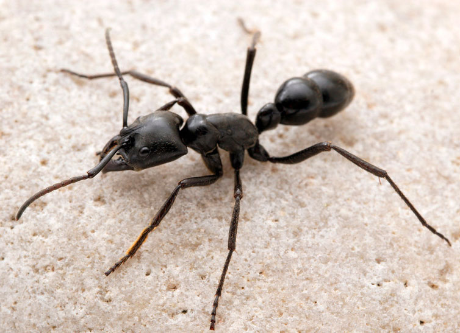

Dinoponera longipes Emery

Динопонера - самый крупный из известных муравьёв, по праву назван "Муравьём-Динозавром". Обитает в неотропиках, а некоторые подвиды вполне уживаются в саванне и сухих лесах. Семьи этой понерины весьма малочислены самое большое до 30 особей, хотя у родственного вида D. quadriceps, до 90 и 1-10 репродуктивных самок.
Динопонера опасный хищник, который охотится на крупных насекомых поверхности почвы, но и не кичица и мелкими позвоночными, такими как амфибии, грызуны, даже рыба и птица! Сначала муравей захватывает жертву мандибулами и пытается мирно донести до гнезда, но если жертва ведёт активную борьбу, то демобилизует уколом жала. Если жертва слишком крупная, то охотник хитро использует жвала для расчленения тела, он меняет прикус и режет плоть как ножницами. Позже жертва будет перемещена в жилище по частям. Фуражируют поодиночке, всегда на поверхности почвы, игнорируя возвышености и растительность. Динопонера ночной хищник, но достаточно пугливый, при приближении крупного существа быстро замирает и закапывается в подлесок. К тому-же они мастера маскировки и часто прибегают к использованию растительного мусора, чтобы прятаться и маскировать гнездо.
Гнезда этого муравья представляют из себя плоские насыпи из плотной глины с крупными норами, по 3см в диаметре. Строят их обычно у основания растений или корней. Входы в муравейник мастерски маскируются частями местных образцов растительности. От входа вглубь, тянется вертикальный тоннель, горизонтально от него отходят куполообразные камеры. Их кол-во зависит от размера семьи. Для маленьких семей характерна 1 крупная камера на дне тоннеля.
У динопонер нету генетически основной матки, откладкой яиц занимается доминантная рабочая-гамергат. Матка подавляет доминантную деятельность своих рабочих при помощи специального феромона, которого матка намазывает на усики своих рабов. Рабочие становятся слово "наркотически" зависимыми от этого вещества и во всем потакают своей королеве. Но иногда происходят и революции, когда одна из гамергат претендует на место доминантной матки. Тогда она покрывает себя маточным феромоном и начинает повеливать другими рабочими. Чаще всего преданные первой матке мураши распознают предательницу и заключяют её в "живой карцер". Это когда группа рабочих растягивает самозванку за конечности и недаёт ей пользоваться зомбирующим феромоном. Если через 2 дня заключения нео-матка не передумает - её убивают. Копуляция происходит в гнезде, присутствие самцов (рис:6) лишний раз указывает на зрелость колонии.
Укус динопонеры неопасен для человека. Такой размер должен внушать ужас, но увы, яд ненастолько токсичен как например у муравьи Paraponera clavata и вызывает болевые ощущения как от укуса пчелы и проходят через 10 минут.
Другие названия: муравей-динозавр
Особенности: имеется жало
Кaсты: рабочие, солдаты
Размеры: имаго до 3см
Количество королев: моногиния, гамергаты
Размер кoлонии: 10—100
Тип муравейника: холмики, с кратерами из земли
Типичное местообитание: неотропики, дождевые леса
Зимовка: не обязательна
Питание: всеяден
Влажность: низкая ≈ 40—60%
Температура: пониженная ≈ 25—27°С
Сложность содержания: средне
Подвижность: средняя
Особенности: имеется жало
Кaсты: рабочие, солдаты
Размеры: имаго до 3см
Количество королев: моногиния, гамергаты
Размер кoлонии: 10—100
Тип муравейника: холмики, с кратерами из земли
Типичное местообитание: неотропики, дождевые леса
Зимовка: не обязательна
Питание: всеяден
Влажность: низкая ≈ 40—60%
Температура: пониженная ≈ 25—27°С
Сложность содержания: средне
Подвижность: средняя